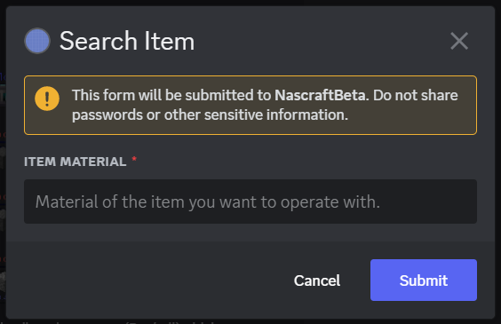
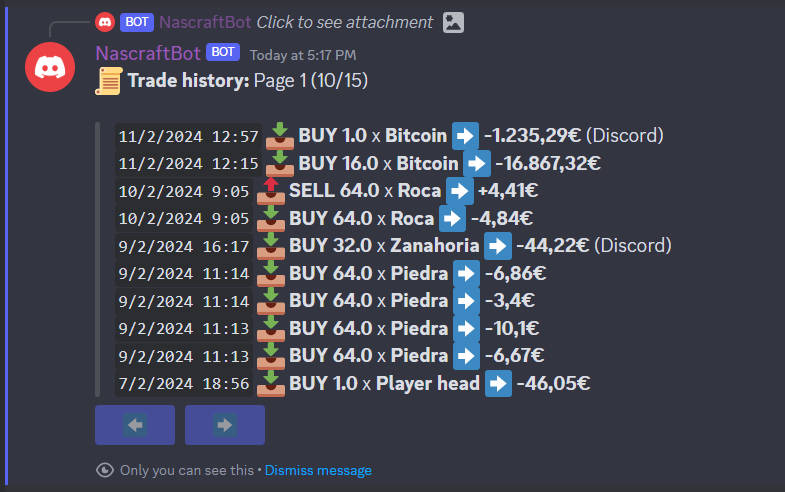

Discord extension: features
Main menu
You can dedicate a market channel. Players can watch price changes there, and linked players can trade remotely.
The bot posts a main menu message with buttons in that channel and updates it every minute.
⚠ Important: nobody should be able to talk in that channel, otherwise player messages will interfere with the menu. The bot also cleans up messages regularly.

Picking items
Players can pick items from "Top gainers", "Most populars" and "Big dippers":

If the item you want is not listed, press "🔎 Search item" and type an identifier or alias:

Trade history
Press "📜 Trade history" to see every trade you made, both in game and on Discord:

Linking your account
Most features need a Discord account linked to a game account. Nascraft supports two ways:
- Built-in system: the bot gives you a code in Discord (for example
39029) and you run/link 39029in game. The "🔗 Link account" button shows the linked game name and lets you unlink at any time.

- DiscordSRV: if DiscordSRV is installed, its links are used directly.
Inventory and balance
Use the matching buttons to see your balance and your "virtual inventory" (items bought on Discord wait there until you take them out in game).